Biography
Born September 23rd, 1926 in Hamlet, North Carolina, John Coltrane’s first introduction to music came through his musician father. Growing up, Coltrane was obsessed with the records of Count Basie and Lester Young.
At the age of 13, he picked up the saxophone and tried to imitate the sounds of his then idols Charlie Parker and Johnny Hodges. Thus began the career of one of the Twentieth Century’s most important and influential artists.
Coltrane’s dramatic life story was cinematic in its scope⎯from his early musical life playing alongside giants Dizzy Gillespie, Eddie Vinson and Jimmy Heath, to breakout performances with the Miles Davis Quintet on their classic recordings ‘Round About Midnight and Kind of Blue, to the historic partnership with Thelonious Monk and then finally to his astonishing solo career that gave the world such musical diamonds as Giant Steps, My Favorite Things, Impressions, Live at Birdland and 1965’s seminal A Love Supreme.
Legacy
The influence Coltrane has had on music spans many genres and musicians. Coltrane's massive influence on jazz, both mainstream and avant-garde, began during his lifetime and continued to grow after his death. He is one of the most dominant influences on post-1960 jazz saxophonists and has inspired an entire generation of jazz musicians
After Coltrane's death, a congregation called the Yardbird Temple in San Francisco began worshiping him as God incarnate. The group was named after Charlie Parker, whom they equated to John the Baptist. The congregation later became affiliated with the African Orthodox Church; this involved changing Coltrane's status from a god to a saint. The resultant St. John Coltrane African Orthodox Church, San Francisco is the only African Orthodox church that incorporates Coltrane's music and his lyrics as prayers in its liturgy
Some Coltrane's Albuns
-
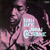
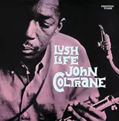
Lush Life
The record became a major commercial success. In 1998, the album received the Grammy Hall of Fame award. -
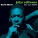
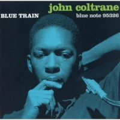
Blue Train
Recorded in Hackensack, New Jersey, it is the only Blue Note recording by Coltrane as the leader on the session. -
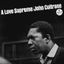
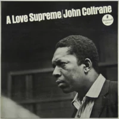
A Love Supreme
He recorded the album with his quartet in one session on December 9, 1964, in Englewood Cliffs, New Jersey. -
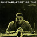
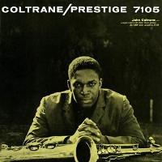
Coltrane
Coltrane's first session as a leader. Recorded after he clean himself out of a drug abuse problem. -
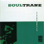
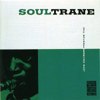
Soultrane
The album is a showcase for Coltrane's late-1950s "sheets of sound" style, the term itself coined by critic Ira Gitler in the album's liner notes. -
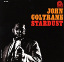
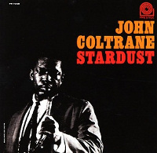
Stardust
The record became a major commercial success. In 1998, the album received the Grammy Hall of Fame award. -
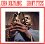
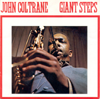
Giant Steps
The Penguin Guide to Jazz selected this album as part of its suggested "Core Collection" calling it "Trane's first genuinely iconic record. -
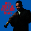
My Favorite Thing
Released a mere month after Coltrane Jazz, unlike his first two albums for Atlantic, this one contains no original compositions, instead jazz versions of four pop standards.
"I take my fundamental cue from John Coltrane that says there must be a priority of integrity, honesty, decency, and mastery of craft."